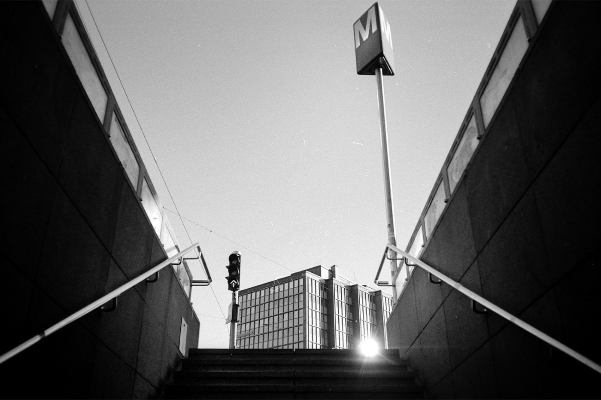
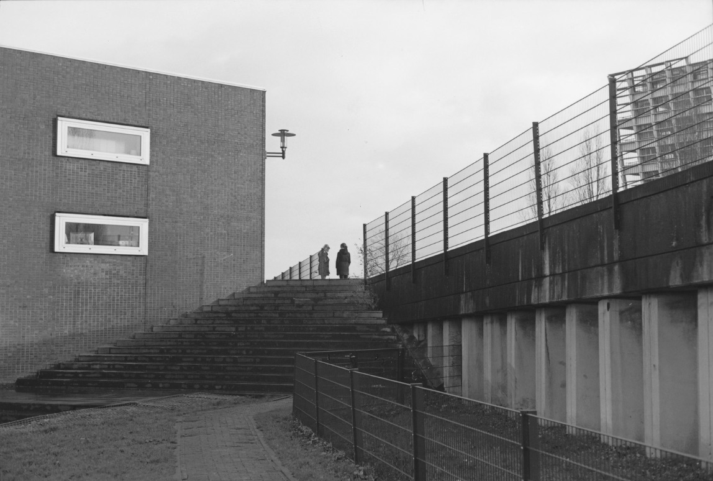

Ilford Delta 400 限量版：乳剂一点没改，黑白却能出正片了
伊尔福发布了一卷 135 限量版 Delta 400（Collector's Edition）。看着像换个包装的老套路，这次动的却是片基：乳剂没改、ISO 还是 400、显影时间与原版一致，只把乳剂涂在更透明的片基 + 防光晕背层上。官方口径是动态范围、暗部、扫描、光晕与锐度「小幅改善」，外观换成全黑暗盒与包装；媒体还点出更实在的一条——片基更透之后，这卷能做黑白反转（幻灯）冲洗，而且是他们口径里伊尔福现役产品线唯一能做到的一卷。
一、先把事实钉住：官方说了什么，没说什么
一手来源是 Harman/Ilford 的官方公告（Instagram / Facebook 帖与官网商品页）；后面的报道（PetaPixel、Kosmo Foto）基本是同一份新闻稿的转述——现在是「一个一手源 + 多家转述」，第三方实测还没有。能核实的与不能核实的分开摆：
| 项目 | 现在的状态 |
|---|---|
| 卷名：Delta 400 Professional 收藏版（135） | ✅ 官方确认（公告 + 官网商品页） |
| 乳剂没变：ISO 400、显影时间一致 + 更透明的片基与防光晕背层 | ✅ 官方说法，媒体一致（本次唯一实质改动） |
| 外观：全黑暗盒 + 全黑包装 | ✅ 官方确认 |
| 能做黑白反转（幻灯）冲洗，现役唯一 | ⚠️ 媒体口径，官方公告未提；无第三方实测 |
| Dmin 0.12（收藏版）／0.30（原版） | ❗单一来源（Fotoimpex 规格页） |
| 价格 £13.08 / $15.19 / $15.99 | ⚠️ 三个渠道互相矛盾，都不是官方定价 |
| 「与原版同价」／限量规模 | ⚠️ 媒体转述 ／ ❌ 查不到具体数字 |
官方的成像说法原话是这样的：「subtle improvements to dynamic range, shadow detail, scanning, halation, and sharpness」（动态范围、暗部、扫描、光晕与锐度有细微改善），并且「保留与原版相同的特性、速度与显影时间」。注意 subtle 这个词：它说的是「细微改善」，不是「翻天覆地」。
之所以分开写：这圈子转述永远比公告跑得快——渠道价被当成官方定价；而「伊尔福十月涨价」查下来是 2026 年 4 月的旧闻。

二、反直觉的地方：这卷的「新」不在乳剂，在片基
同一款乳剂、同一个 ISO、同一套显影时间——按原版 Delta 400 的流程冲，不会有肉眼可见的差别；实际意义是：不用为它改任何流程。
胶片的结构是「乳剂层 + 片基 + 背层」。防光晕背层吸掉的是穿过乳剂又反射回来的那部分光；片基越透、背层越有效，底片上该黑的地方就越黑，扫描仪抓暗部越轻松。收藏版动的正是这两处，官方那句「细微改善」就是这么来的。
三、真正的新东西：黑白也能出正片
本站《冲洗指南》里提过，反转片（正片）走 E-6，控温最严、能做的店最少。黑白也能做反转：先正常显影得到负像 → 漂白洗掉已显影的银 → 剩下的卤化银整体再曝光（或化学灰化）→ 二次显影，得到的就是正像，一张能直接投影的黑白幻灯。
过去这套流程卡在材料上：普通黑白卷片基偏灰，投影时底子不透亮、光晕也更重；透明片基配防光晕背层正对这个痛点，所以媒体把它当成主要卖点——⚠️ 官方公告本身只讲了片基与成像改善，没提反转。
⚠️ 两条边界：没有第三方实测，「能反转」目前是媒体口径（官方公告未提）；「能做」不等于「只能」——按普通负片流程冲完全没问题。反转药水配方各家不同，多数冲扫店只做负片，动手前先问清楚。

四、价格：三个渠道三个说法
这是最不干净的部分：英国官方店 £13.08／卷；PetaPixel 写 $15.19（并称只走线下、不铺官方网店）；另有渠道写 $15.99／£15.99。没有一个是官方统一零售价。不过 Kosmo Foto 与 Digital Camera World 都称它没有因为「限量版」三个字加价——⚠️ 仍属媒体口径。下表只用来定位它落在哪一档，到手价按本站口径（卷价中值 + 黑白送冲约 ¥25，折 36 张）：
| 卷（同为 ISO 400） | 品牌 | 135 参考价 | 到手约 ¥/张 |
|---|---|---|---|
| Fomapan 400 Action | Foma（捷克） | 约 ¥30–40 | ¥1.7 |
| Kentmere 400 | Ilford（英国） | 约 ¥45–60 | ¥2.2 |
| HP5 Plus | Ilford（英国） | 约 ¥70–90 | ¥2.9 |
| Delta 400（原版） | Ilford（英国） | 约 ¥80–100 | ¥3.2 |
| Tri-X 400 | 柯达（美国） | 约 ¥85–105 | ¥3.3 |
| T-Max 400 (TMY) | 柯达（美国） | 约 ¥90–110 | ¥3.5 |
| StreetPan 400 / Pancro 400 | JCH / Bergger | 约 ¥110–140 | ¥4.2 |
结论：它大概率的落点是「比 HP5+ 高一档，和原版 Delta 400、T-Max 400 同档」。⚠️ 本站不折算人民币：限量版没有官方人民币价，那些带官方感的「¥xxx 一卷」都是汇率加渠道价的二次加工。

五、买不买：三种人三种答案
六、一句话
限量版这三个字，通常卖的是包装；这一次卖的是片基——而片基决定你的黑白能不能变成幻灯。
数据口径：事实来自 Harman/Ilford 官方公告与两家署名媒体（2026 年 9 月 25 日查证）；价格取自渠道页且互相矛盾，不是官方定价；「能反转且现役唯一」「没加价」为媒体口径，「市场测试」出自官方社媒回复，均无第三方实测；Dmin 为单一来源。本站也还没有 Delta 400 的样片（缺样片的 15 卷里就有它），文中样片取自同档 400 度黑白，只作影调对照。
本站收录的同档 400 度黑白
Delta 400（约 ¥80–100） HP5 Plus（约 ¥70–90） T-Max 400（约 ¥90–110） Tri-X 400（约 ¥85–105） Kentmere 400（约 ¥45–60） Fomapan 400 Action（约 ¥30–40）
去胶卷库看看这几卷
「胶卷档案」是一个可搜索的胶卷资料库：每卷都有规格、特性、使用感受、参考价与实拍样片。搜品牌或型号就能直达。